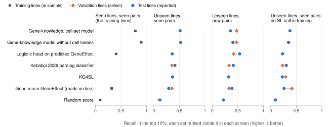

SL benchmark: our models against the baselines

Stage two: SL ranking
Recall in the top 10%: the SL pairs that a model ranks in a screen's top 10%, divided by the smaller of the screen's SL pairs and its top-10% places, so a perfect ranking gives 1. It is averaged over screens, then studies, then held-out lines. Random gives about 0.10, more in screens with over 10% SL pairs. Seed 0, one run per model; validation selects, test is scored once.

| Model | What it reads | Recall, validation ↑ | Recall, test ↑ | AUROC, validation ↑ | AUROC, test ↑ |
|---|---|---|---|---|---|
| Ours: gene-knowledge model without cell tokens | Gene vectors from function text, protein and network sources; the line's mean expression; a pair head on the gene-in-line embeddings | 0.508 | 0.501 | 0.79 | 0.78 |
| Ours: gene-knowledge, cell-set model (Figure 2) | The same, with one token for each cell of the line (Tx1-3B embedding) | 0.500 | 0.485 | 0.79 | 0.77 |
| Ours: gene-knowledge, cell-set model with CellNet | The same, with CellNet's embedding of each cell | 0.486 | 0.473 | 0.78 | 0.77 |
| Kebabci 2026 paralog classifier | Paralog features with stage one's predicted GeneEffect | 0.355 | 0.395 | 0.66 | 0.66 |
| Ours: logistic regression on predicted GeneEffect after a gene's loss | For each gene, the change in its predicted GeneEffect when the other gene's expression is set low; both genes' predicted GeneEffect and expression | 0.394 | 0.361 | 0.74 | 0.72 |
| KG4SL | Knowledge graph, trained on the training lines | 0.367 | 0.338 | 0.69 | 0.65 |
| Kebabci 2026, measured GeneEffect (reference) | Same classifier on DepMap's measured GeneEffect | 0.296 | 0.304 | 0.62 | 0.62 |
| Control: measured GeneEffect | DepMap, lines with GeneEffect | 0.425 | 0.296 | 0.74 | 0.64 |
| De Kegel 2021 paralog classifier | Released scores | 0.281 | 0.293 | 0.66 | 0.66 |
| PARIS | Random-forest dependency pairs (Python port) | 0.219 | 0.213 | 0.57 | 0.57 |
| MiT4SL | Cell-line-specific graph model | 0.154 | 0.138 | 0.59 | 0.56 |
| Cilantro-SL | Geneformer deletion embeddings | 0.123 | 0.134 | 0.51 | 0.51 |
| Random score | A seeded random number | 0.102 | 0.124 | — | — |
| SLIdR | Mutation-dependency test (Python port) | 0.095 | 0.115 | 0.48 | 0.50 |
- The gene-knowledge models are above every published baseline on validation and test (Table 1; run of 2026-11-19): 0.500 / 0.485 with cell tokens against 0.355 / 0.395 for the Kebabci classifier, paired difference +0.145 [+0.090, +0.205] / +0.090 [+0.038, +0.145].
- The cell tokens and the GeneEffect pretraining add nothing: the model without cell tokens is the highest row, and the early stop of the pretraining keeps the untrained model.
Where the result holds: seen and unseen lines and pairs
A pair is seen when the same study labelled it in a training line; else it is new. Every validation and test line is an unseen line.

| Model | Seen lines, seen pairs (training) ↑ | Unseen lines, seen pairs ↑ | Unseen lines, new pairs ↑ | Unseen lines, seen pairs that no training line called SL ↑ |
|---|---|---|---|---|
| Ours: gene-knowledge, cell-set model (Figure 2) | 0.782 | 0.518 / 0.514 | 0.475 / 0.354 | 0.388 / 0.375 |
| Ours: gene-knowledge model without cell tokens | 0.898 | 0.529 / 0.525 | 0.472 / 0.403 | 0.366 / 0.347 |
| Ours: gene-knowledge, cell-set model with CellNet | 0.883 | 0.501 / 0.507 | 0.483 / 0.426 | 0.334 / 0.276 |
| Ours: logistic regression on predicted GeneEffect after a gene's loss | 0.407 | 0.364 / 0.359 | 0.419 / 0.534 | 0.216 / 0.232 |
| Kebabci 2026 paralog classifier | — | 0.355 / 0.412 | 0.330 / 0.411 | 0.229 / 0.303 |
| KG4SL | — | 0.374 / 0.368 | 0.310 / 0.323 | 0.290 / 0.226 |
| De Kegel 2021 paralog classifier | — | 0.281 / 0.302 | 0.293 / 0.392 | 0.170 / 0.206 |
| Control: gene mean GeneEffect of the two genes (reads no line) | 0.318 | 0.353 / 0.292 | 0.329 / 0.382 | 0.409 / 0.261 |
| Random score | 0.093 | 0.101 / 0.119 | 0.224 / 0.220 | 0.071 / 0.095 |
Does the score read the line?
The finished weights are scored again with each line's input replaced; no model is refitted.

| Line input | Recall, validation ↑ | Recall, test ↑ | Own input minus this row, validation | Own input minus this row, test |
|---|---|---|---|---|
| Gene-knowledge, cell-set model (Figure 2) | ||||
| The line's own expression and cells | 0.500 | 0.485 | — | — |
| Context-ablated: the training-side mean expression, no cells | 0.509 | 0.498 | −0.009 [−0.034, +0.020] | −0.013 [−0.048, +0.018] |
| Another line's expression and cells | 0.447 | 0.496 | +0.054 [+0.005, +0.120] | −0.011 [−0.042, +0.015] |
| Gene-knowledge model without cell tokens | ||||
| The line's own expression | 0.508 | 0.501 | — | — |
| Context-ablated: the training-side mean expression | 0.460 | 0.485 | +0.049 [+0.014, +0.088] | +0.016 [−0.012, +0.045] |
| Another line's expression | 0.456 | 0.491 | +0.053 [+0.001, +0.131] | +0.010 [−0.010, +0.031] |
- The recall falls from the training lines to seen pairs of unseen lines, and again to new pairs (Figure 4).
- The model does not only copy the training lines' calls: it is above the published baselines on the pairs that no training line called SL. The gene mean GeneEffect, which reads no line, is near it on validation (Figure 4, right).
- The score is a score of the gene pair: with the line's input taken away, the model with cell tokens scores the same (Figure 5).
Stage one: GeneEffect in the SL held-out lines
Whole-line Pearson: predicted against measured GeneEffect over all genes of a line, mean over lines. MSE: mean squared GeneEffect error over all lines and genes. Per-line residual Spearman: the line-specific metric, over the selective genes of each line, after the training gene mean is removed (the selector).
| Model | Whole-line Pearson ↑ | MSE ↓ | Per-line residual Spearman ↑ |
|---|---|---|---|
| Our best: linear expression model, wider gene space (SL protocol §13) | 0.9197 | 0.0301 | 0.1965 |
| Ours: gene-knowledge model without cell tokens, after its SL training (SL protocol §18) | 0.9154 | 0.0315 | 0.0595 |
| Ceiling: a perfect model against one measured screen (estimate) | 0.9283 | 0.0277 | 0.6054 |
| Two DepMap screens of one line (8 test lines) | 0.8618 | 0.0553 | 0.3665 |